Everyday life in the city is exhausting—the urban environment, the chaos, the speed, the constant noise, the many faceless buildings that reach the sky, even blocking the sky itself. Often, I look up at the sky but can't even notice the clouds because of the grey, towering concrete buildings that stand here and there, sternly staring down at me. Not because they reach the clouds, but because in their severity, the feeling of them disappears.
Escape is needed...
For the first time, I noticed the gardens in Tskaltubo (Tskaltubo is a town in Western Georgia, where there were many sanatoriums during the Communist era, but now most of these sanatoriums have lost their function). More precisely, it was there that I realized I wanted to work on this series. There, more than anywhere else, I get the feeling that nature wins. Everything is overgrown and untouched. Even the buildings are overrun with plants, growing freely on their own. People walk rarely, and they do so with hunched backs.
Nature, as I present it, is more magical. They are the gardens I’m always searching for and rarely find.. They are the gardens where I find wholeness. It’s my hidden self-expression through images. It’s as if I, too, am secretly being transported into them.


 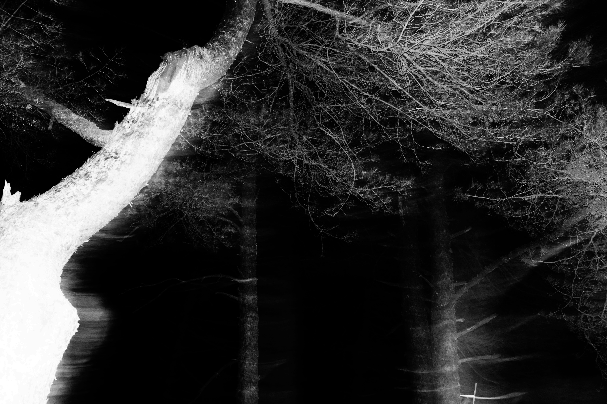
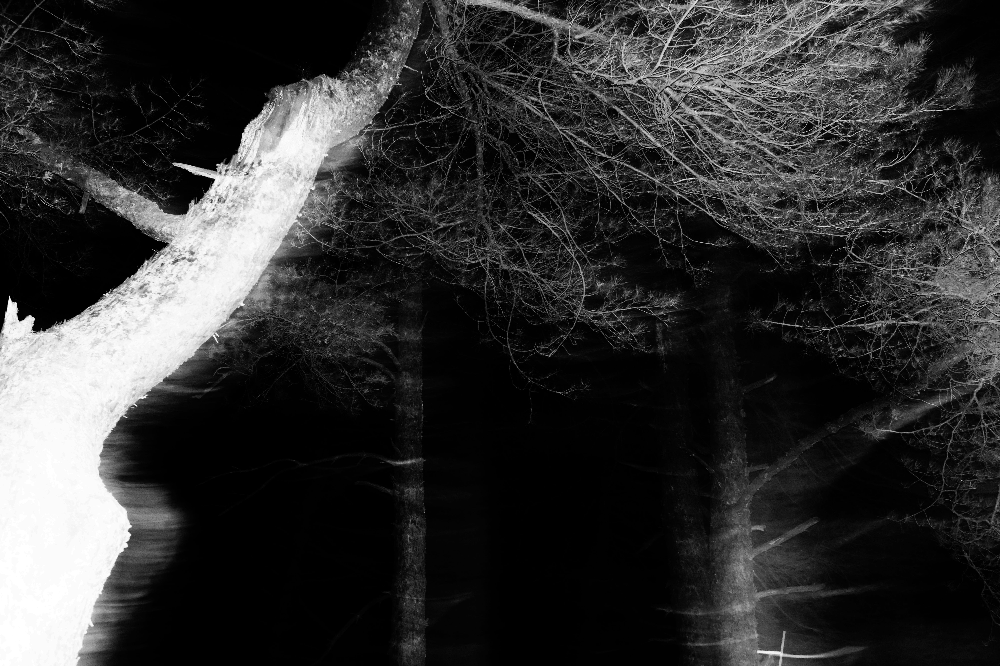
 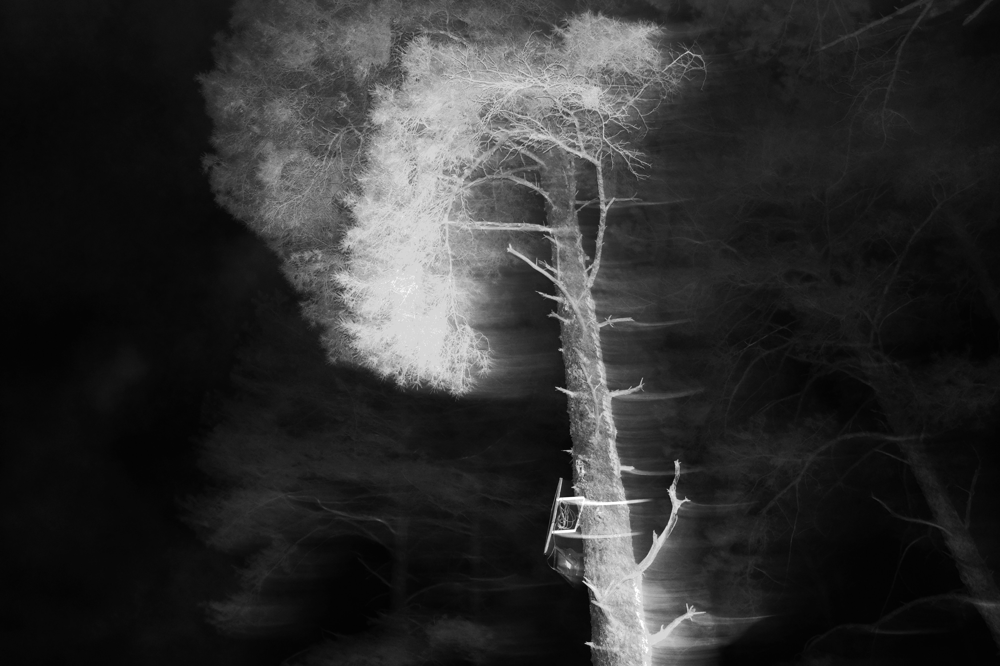
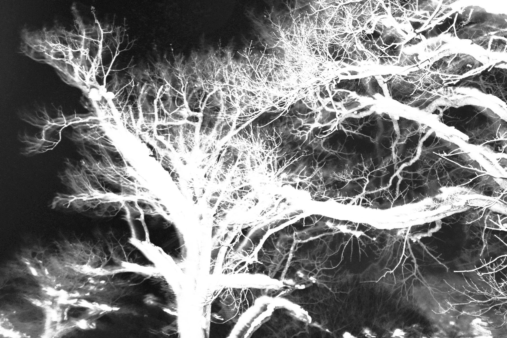
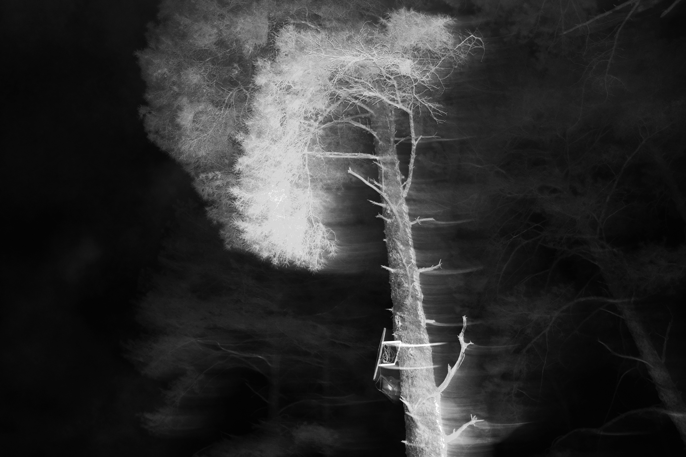
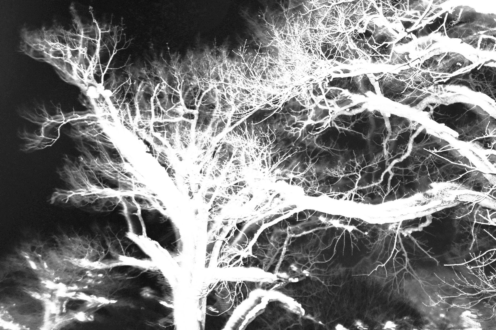

 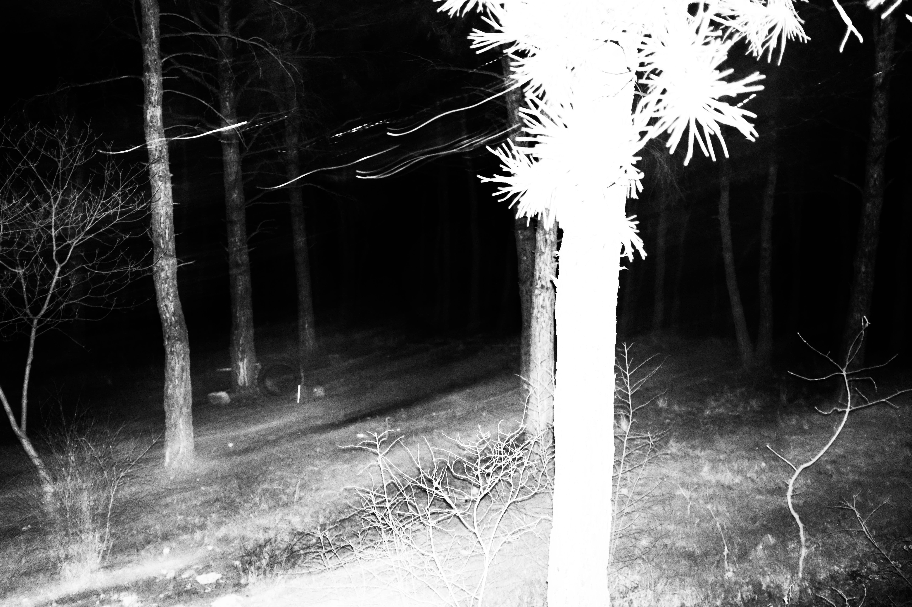
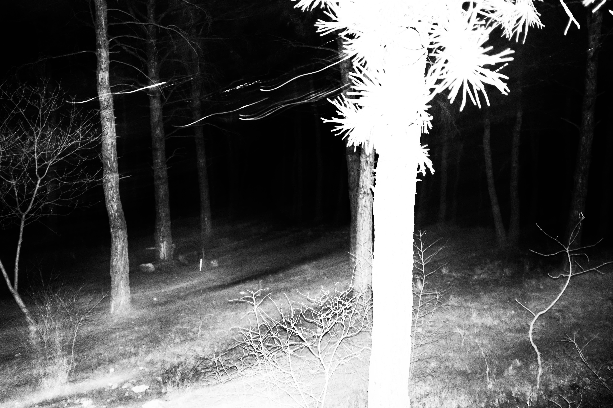


 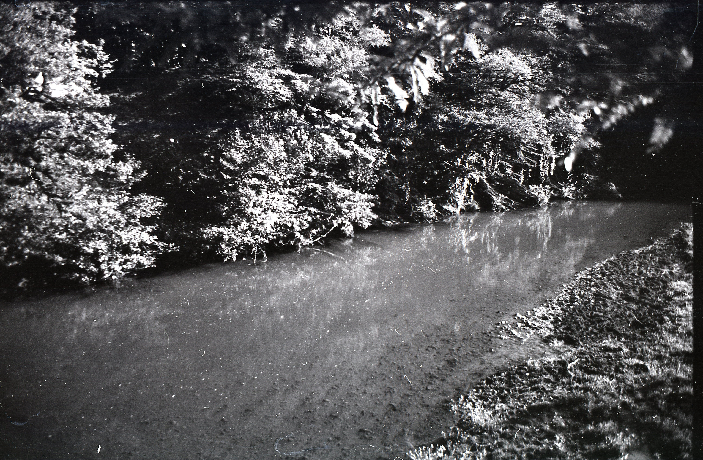
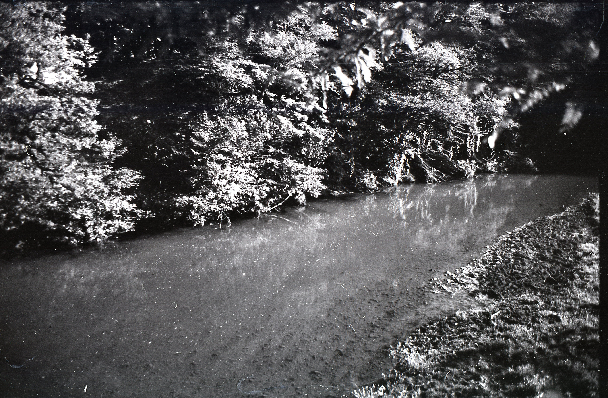
 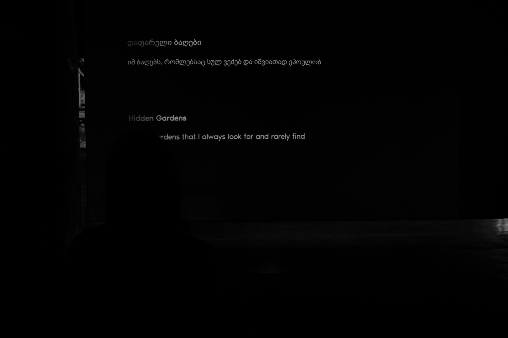
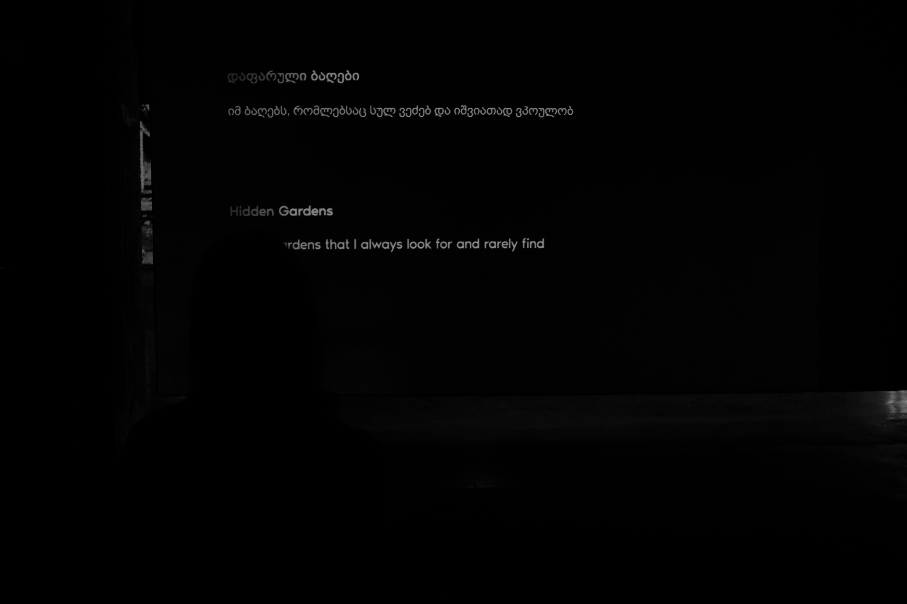